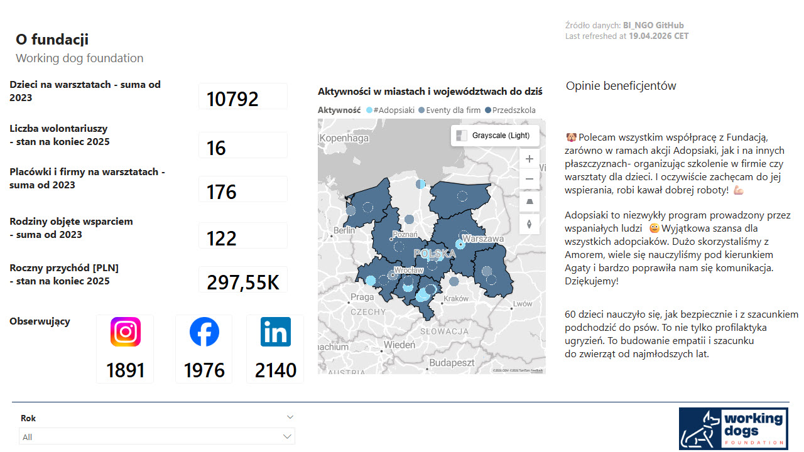
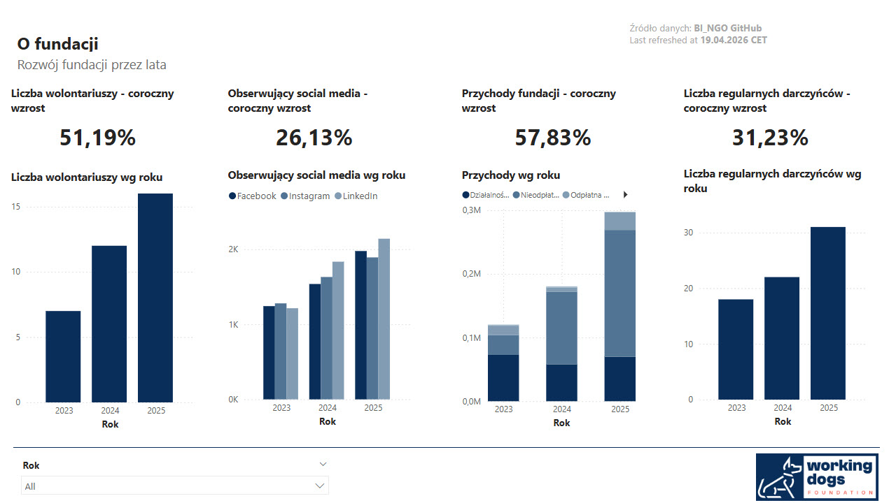
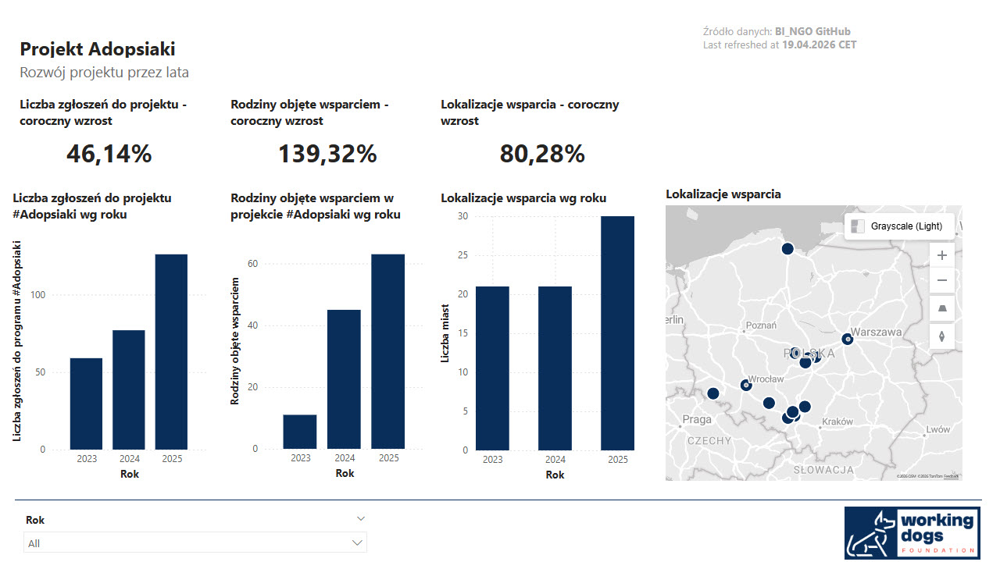
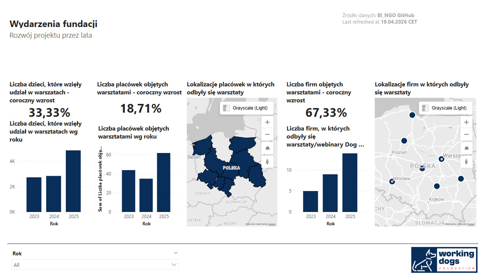
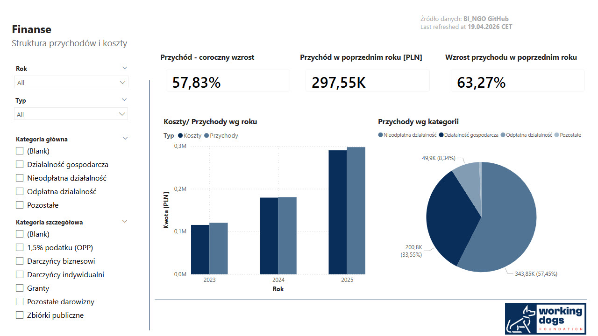
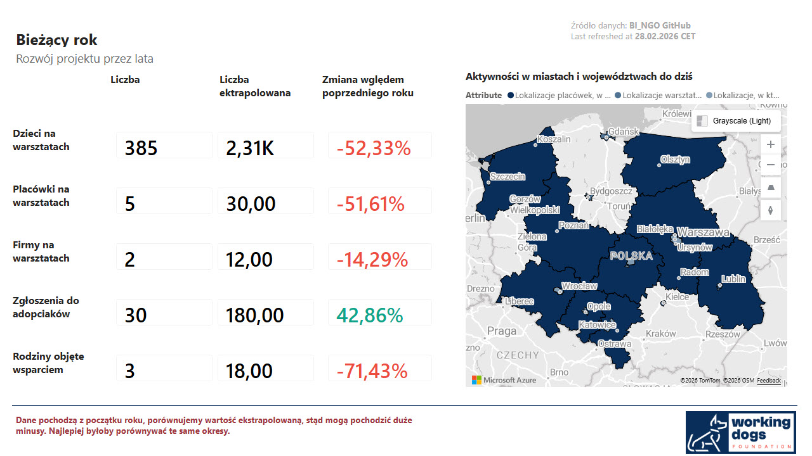

Dashboard dla Working Dog Foundaton w ramach analitycznego wolontariatu #BI_NGO. Dashboard dla zarządu pokazujacy wyniki, CAGR, mapy, KPI. Dashboard zawiera strony do użycia mareketingowego - prezentacja dynamicznego rozwoju organizacji, a także wewnętrznego - przegląd finansów, wyniki w roku bieżącym.





